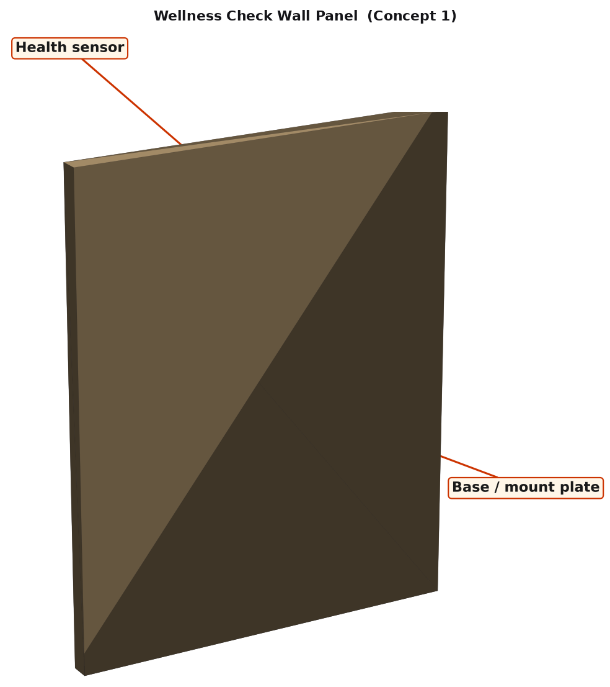
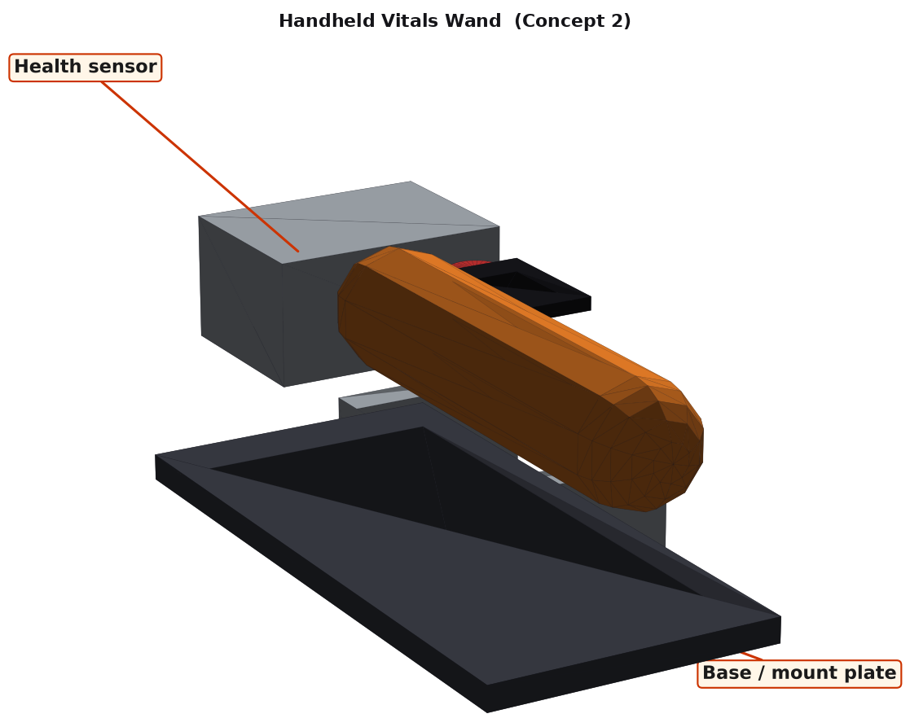
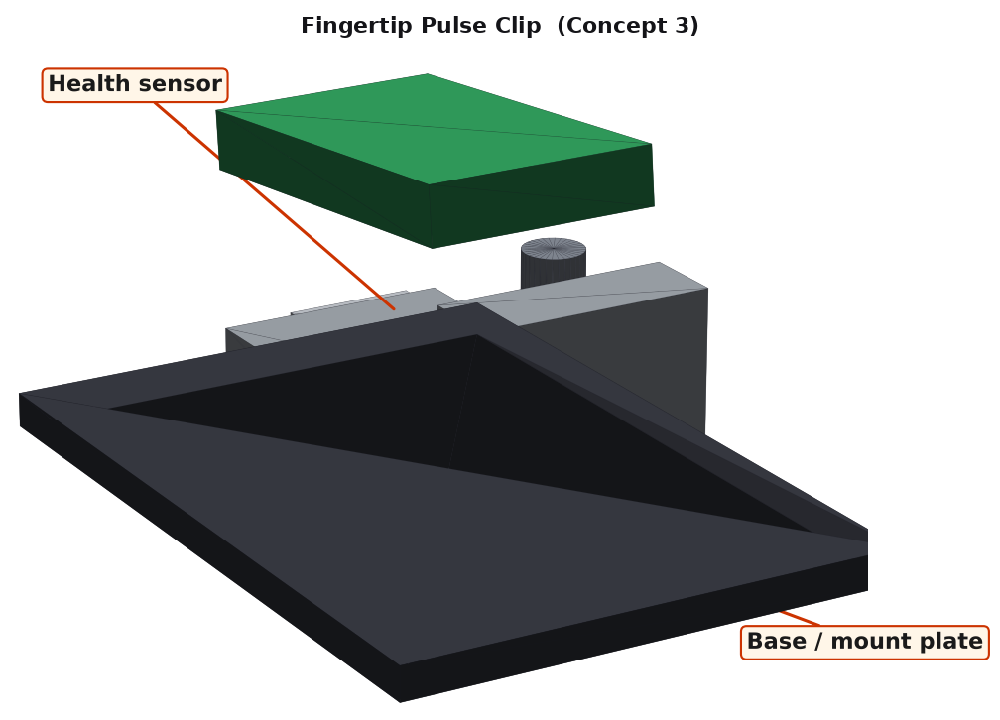
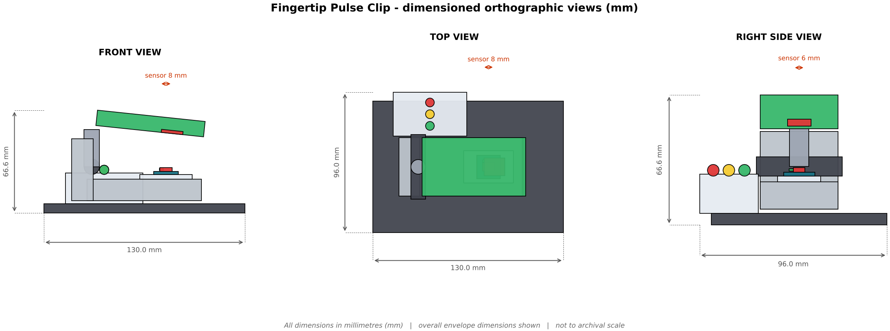
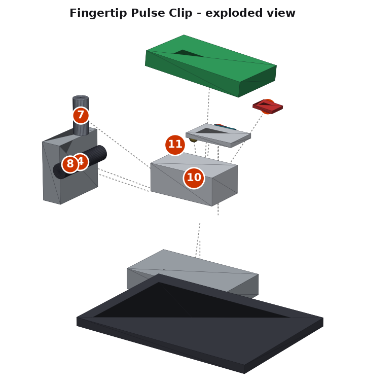

Design Brief
Context that frames the whole Criterion B response for this lesson.
Unit objective: Visualise health data to understand how heart rate, oxygen levels and body temperature reflect physical condition and prevent overexertion.
Problem context (community need): School sports days and community fitness events have no easy way to check a student's pulse and oxygen before exertion. A small clip or wand gives a quick, friendly check.
Design task: Design a physical, 3D-printable / laser-cut housing that holds the Arduino and integrates the Health sensor (heart rate, SpO₂, temperature), so a community can read and use the data.
User: school nurses, PE teachers and students.

Data Science Link
Your product exists to produce good data. This is how the unit's Four Big Ideas connect to the design.
What data does the sensor give? Measures heart rate (BPM), blood oxygen (SpO₂) and temperature in real time.
How the data is useful: Detects early signs of stress, illness or exhaustion and supports smarter decisions about rest.
B1 · Design Specification
Each success criterion is described and justified using ACCESSFM. Rows marked are measurable. Size, mass and cost limits are calculated from the chosen 3D model.
| Specification | # | Success criterion | Justification |
|---|---|---|---|
| Aesthetics | 1.1 | Colour scheme of clean white with a calm green accent. | A clear, friendly palette makes the device recognisable and welcoming in a community space. |
| 1.2 | Smooth, rounded external edges (fillet ≥ 2 mm) and tidy cables hidden inside the housing. | Rounded edges read as safe and professional; hidden wiring avoids snagging. | |
| Cost | 2.1 | Material + fabrication cost ≤ AED 60, not counting the Arduino and sensor already in the kit. | Based on PETG at about AED 0.12/g, MDF offcuts and hardware; keeps a class set affordable. |
| 2.2 | Re-uses the school's Arduino Uno and sensor module; no extra electronics to buy. | Avoids purchase orders and keeps the design compatible with the unit kit. | |
| Customer | 3.1 | Suits school nurses, PE teachers and students: readable at a glance, no tools needed to read the result. | Design must meet the needs of the real community user, not just the student. |
| 3.2 | Opens or unscrews with one tool so the Arduino and sensor can be re-wired and the USB cable reaches a laptop. | Students need to re-flash the Arduino and re-collect data throughout the unit. | |
| Environment | 4.1 | At least 80% of structural material is recyclable PETG or reclaimed MDF offcuts. | PETG is recyclable and MDF offcuts come from the lab scrap bin (6 R's: Reduce, Reuse). |
| 4.2 | Printed + cut mass ≤ 150 g. | Lower mass means less filament, less print energy and an easier install. | |
| Size | 5.1 | Overall envelope ≤ 140 × 110 × 80 mm (L × W × H). | Small enough to fit on a bench, pole or desk and to be printed in sections. |
| 5.2 | Every printed part fits a 200 × 200 mm print bed; every cut part fits a 300 × 300 mm laser bed. | Matches the lab machines students will use. | |
| Safety | 6.1 | Smooth, skin-safe surface (no sharp edges, wiped with alcohol wipes), no heat, and a low-voltage supply only. | Reduces the chance of injury or damage when students and the public use it. |
| 6.2 | Low-voltage USB power only, no exposed sharp corners or live terminals. | Required for any student-built electronic product. | |
| Function | 7.1 | Reads pulse and SpO₂ within 20 seconds of a finger being placed, and shows both on a display. | Directly measures whether the device does the job in the scenario. |
| 7.2 | Finger groove holds a finger steady within 1 mm of the window and blocks stray light. | The housing must help the sensor, not block or disturb it. | |
| 7.3 | The sensor's reading is available on the Arduino's serial port so Python can log, clean and graph it. | This is how the device joins the Data Science workflow. | |
| 7.4 | Sensor can be swapped in under 2 minutes with hand tools. | Sensors fail or need replacing in a busy classroom. | |
| Material | 8.1 | Smooth PETG for the jaws (skin contact, wipe-clean); MDF base only for the stand. | Material is matched to where the device will live (sun, damp, skin contact, heat). |
| 8.2 | Flat or simple parts use 3 mm laser-cut MDF; complex shapes are 3D printed. | Uses each lab machine for what it does best. |
🧩 Your turn — write your own B1
All: write 2 success criteria (one Aesthetics, one Safety) for your device.
Most: make at least one measurable (a number and a unit).
Some: justify it with research (a datasheet, a standard or a real product).
B2 · Design Ideas 3 different ideas
Three ideas that differ in form and mechanism, not just looks. Each sketch is an isometric render of the 3D CAD model with the sensor and base labelled.

Concept 1 — “Wellness Check Wall Panel”
A shared panel for queue-based checks. Quick, but less hygienic.
Envelope 37.0 × 120.0 × 150.0 mm · ≈ 67 g · ≈ AED 32

Concept 2 — “Handheld Vitals Wand”
A hand-held wand with a screen. Portable, but harder to hold steady.
Envelope 162.0 × 70.0 × 68.5 mm · ≈ 79 g · ≈ AED 29

Concept 3 — “Fingertip Pulse Clip” SELECTED
A hinged clip holds a fingertip over the sensor window with the top jaw blocking room light. Easy to use and hygienic to wipe.
Envelope 130.0 × 96.0 × 66.6 mm · ≈ 73 g · ≈ AED 29
🧩 Your turn — sketch a 4th idea
All: describe a 4th idea in 2–3 sentences. It must differ by form or mechanism.
Most: say which ACCESSFM criteria it would score best and worst on.
Some: describe it so well a partner could draw it from your words alone.
B3 · Chosen Design
Each idea is rated 1 (poor) – 5 (excellent) against every ACCESSFM success criterion from B1.
| Category | What is being evaluated | Concept 1 Wellness Check Wall Panel | Concept 2 Handheld Vitals Wand | Concept 3 Fingertip Pulse Clip |
|---|---|---|---|---|
| Aesthetics | Friendly, rounded, tidy | 4 | 3 | 4 |
| Cost | ≤ AED 60, reuses kit electronics | 2 | 4 | 4 |
| Customer | Easy for the community user to read and open | 3 | 3 | 4 |
| Environment | ≥ 80% recyclable material, light | 3 | 4 | 4 |
| Size | Fits ≤ 140×110×80 mm | 3 | 4 | 5 |
| Safety | Low voltage, no sharp edges | 3 | 4 | 5 |
| Function | Meets both measurable function targets | 3 | 3 | 5 |
| Material | Material suits where it lives | 3 | 4 | 4 |
| Total (/40) | 24 | 29 | 35 | |
🧩 Your turn — rate and justify
All: pick one rating you disagree with, give your own 1–5 and say why.
Most: re-total the scores. Does the chosen design still win?
Some: write a 3-sentence justification in the style above for your three ideas.
B4 · Detailed Plans
Dimensioned CAD output for the chosen design: orthographic (front / top / right side), exploded view, and Bill of Materials.


Bill of Materials (BOM)
| # | Part | Material / source | Approx. size | Qty | Fabrication method |
|---|---|---|---|---|---|
| 1 | Base plate | 3mm MDF | 130 x 90 x 6 mm | 1 | Laser-cut |
| 2 | Lower jaw | PETG | 74 x 40 x 14 mm | 1 | 3D-printed (20% infill) |
| 3 | Finger groove | PETG | 34 x 22 x 3 mm | 1 | 3D-printed (20% infill) |
| 4 | Hinge pin | Hardware | 44 x 10 x 10 mm | 1 | Off-the-shelf |
| 5 | Upper jaw | PETG | 70 x 40 x 10 mm | 1 | 3D-printed (20% infill) |
| 6 | Upper jaw LED window | PETG | 14 x 12 x 2 mm | 1 | 3D-printed (20% infill) |
| 7 | Spring | Hardware | 24 x 10 x 10 mm | 1 | Off-the-shelf |
| 8 | Hinge block | PETG | 40 x 40 x 14 mm | 1 | 3D-printed (20% infill) |
| 9 | Heart-rate / SpO2 sensor | Sensor / Arduino kit part | 16 x 16 x 2 mm | 1 | Kit component - reused |
| 10 | Controller box | PETG | 50 x 30 x 20 mm | 1 | 3D-printed (20% infill) |
| 11 | Status LED | Sensor / Arduino kit part | 6 x 6 x 6 mm | 3 | Kit component - reused |
| 12 | M3 x 12 bolt & nut sets | Hardware | M3 x 12 mm | 14 | Off-the-shelf |
| 13 | Cable ties & wiring set | Hardware | - | 1 | Off-the-shelf |
Estimated printed + cut mass: ≈ 73 g (limit 150 g). Estimated cost: ≈ AED 29 (limit 60). Overall envelope: 130.0 × 96.0 × 66.6 mm.
🧩 Your turn — dimension your own idea
All: list 3 real dimensions (mm) your design needs.
Most: list at least 5 BOM rows (part, material, qty, method).
Some: describe one feature to add to your exploded view (a wiring channel, a hinge, a snap-fit).
Make it your community's
Design a respectful data-privacy rule: who may see a student's health readings, and how will you store them safely for your data-science project?
🧩 Your turn — data & community challenge
Design a respectful data-privacy rule: who may see a student's health readings, and how will you store them safely for your data-science project?
All: answer the question in 3–4 sentences.
Most: name the chart type you would use and why.
Some: describe one design change to your device so the data is more reliable.
Downloads & TinkerCAD
STL files for all three ideas and the chosen design, ready for TinkerCAD or any slicer.
- Go to tinkercad.com and sign in.
- Create a new 3D Design.
- Click Import, choose an
.stlfile, set units to mm, then Import. - Measure, recolour, duplicate or merge it with your own shapes, then Export → .STL for the slicer.
Modelling Worksheet — Making the Physical Model
Follow in order. Lab tools: 3D printer (PETG), laser cutter, hex driver, 320-grit sandpaper, hot glue gun.
- Check the CAD: open the chosen STL in TinkerCAD or your slicer, set units to millimetres and confirm the envelope is 130.0 × 96.0 × 66.6 mm (limit 140 × 110 × 80 mm).
- Slice the printed parts (Controller box, Finger groove, Hinge block, Lower jaw, Upper jaw, Upper jaw LED window) in Cura/PrusaSlicer: PETG, 0.2 mm layers, 15–20% infill, supports only where an overhang needs them.
- Laser-cut the MDF parts (Base plate) from 3 mm MDF using the top orthographic view as the footprint.
- De-burr and sand every printed part (320 grit); check the sensor opening and screw holes so nothing binds or blocks the sensor.
- Fit the sensor: Seat the sensor window flush in the finger groove, with the top jaw's LED window directly over it, and cover the PCB edges with tape to block side light.
- Assemble following the numbered exploded view and the BOM: fasteners finger-tight first.
- Wire and test: connect the sensor to the Arduino, upload your test sketch (Criterion C), and watch the readings in the Serial Monitor.
- Install in the community location from your design brief and confirm the sensor sees what it should.
- Function-test against specifications 7.1 and 7.2: Reads pulse and SpO₂ within 20 seconds of a finger being placed, and shows both on a display. Record the results in your portfolio.
- Finish: spray or vinyl-wrap in the colour scheme from specification 1.1, then re-test.
Quiz — Personal Health Monitor
Kahoot-style, timed, auto-marked. Your score is saved once you log in above.
🏁 Ready to play?
10 questions · 15 seconds each · lesson content + Criterion B and Data Science skills.
Reflection prompts
- Which ACCESSFM category was hardest to satisfy with all three of your ideas, and why?
- How did the way the sensor is housed change the quality of your data?
- Where might your device still fail the Safety criterion in real use, and how would you test for it?